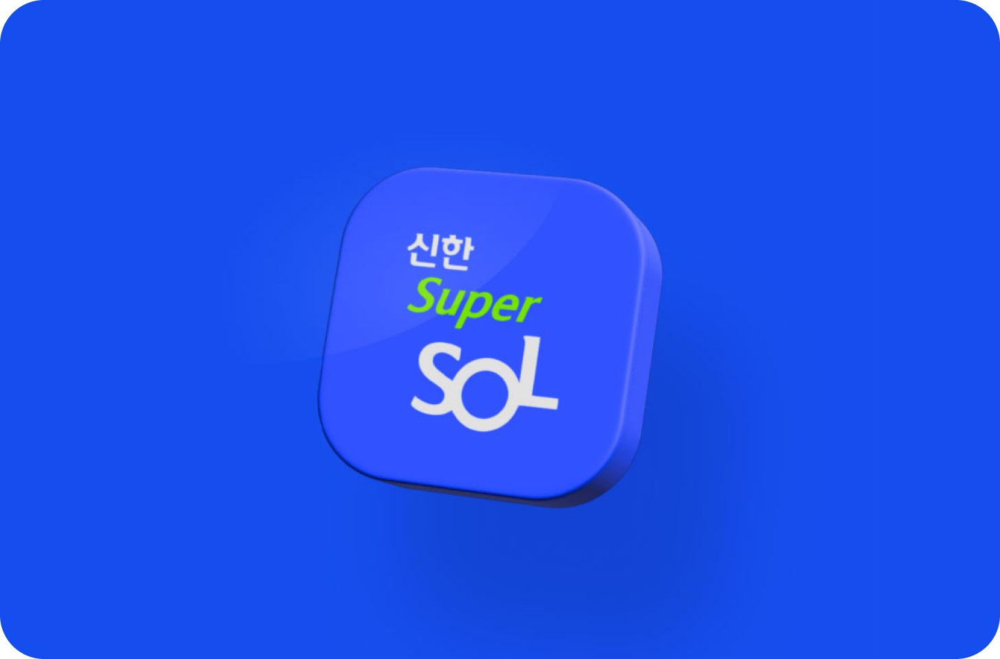
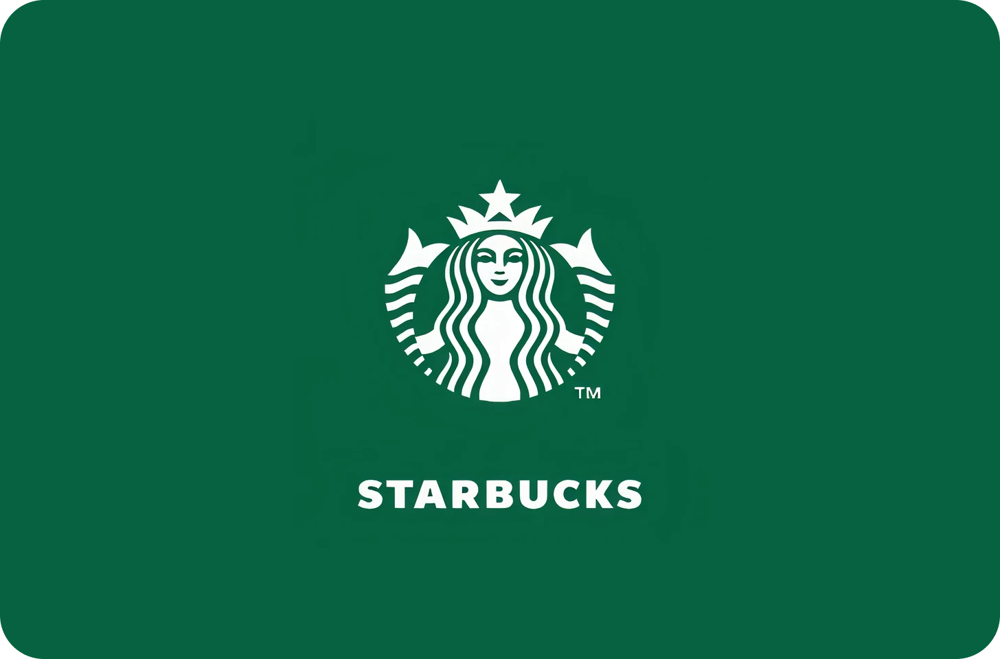
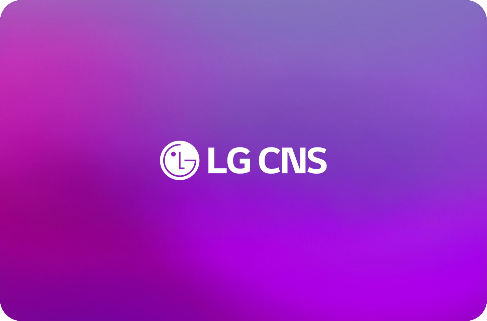
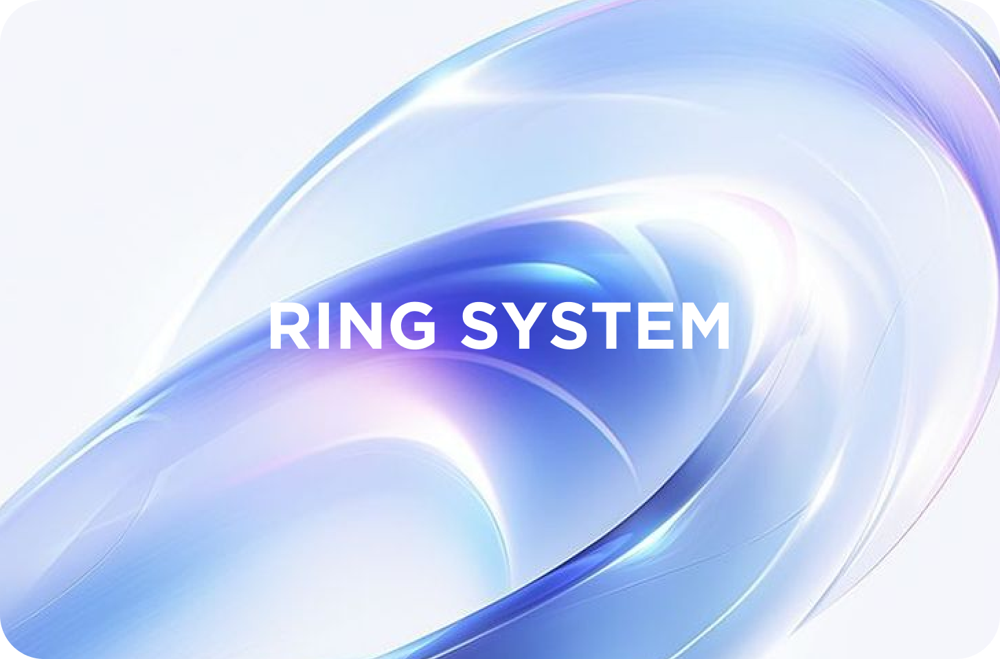

Mega Finance
신한 ‘슈퍼SOL’ 6년 전담 운영 및 차세대 통합 기획 등
제1금융권 핵심 플랫폼의 혁신을 주도해왔습니다.

기술에 가치를 더해, 내일의 설렘을 완성합니다.
Insight
Interest
Innovation
신한 ‘슈퍼SOL’ 6년 전담 운영 및 차세대 통합 기획 등
제1금융권 핵심 플랫폼의 혁신을 주도해왔습니다.

대규모 모빌리티 플랫폼 구축 및 기술 시각화 노하우로
차세대 비즈니스를 지원합니다.

LG CNS, 신한DS의 공식 협력사로서 대형 SI 주사업자와의
완벽한 시너지로 프로젝트의 성공을 이끕니다.

고유 디자인 시스템과 자체 AX 솔루션 R&D를 통해
프로젝트 생산성과 기술 경쟁력을 극대화합니다.
